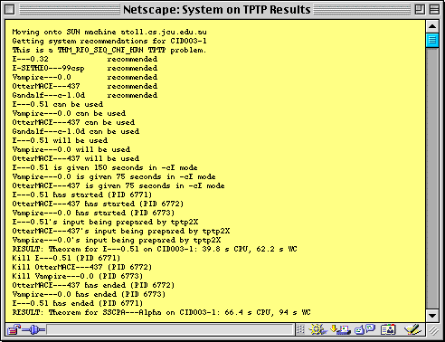

Interesting Output

- Execution transferred onto a SUN workstation
- Problem is real 1st order, some equality, CNF, Horn
- System selection: 5 recommended, 4 available, 3 used
- System execution: CPU limits, tptp2X, competition parallelism
- Solution: One solution, all killed